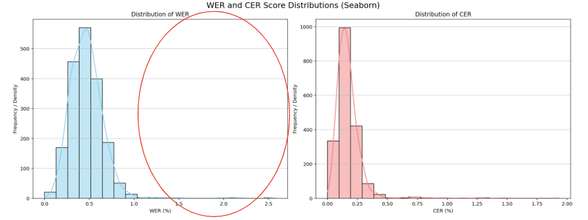
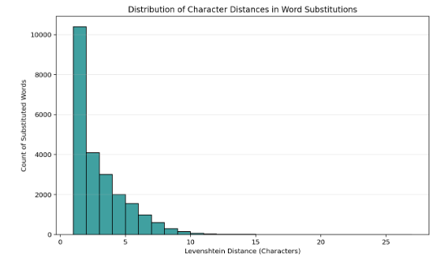
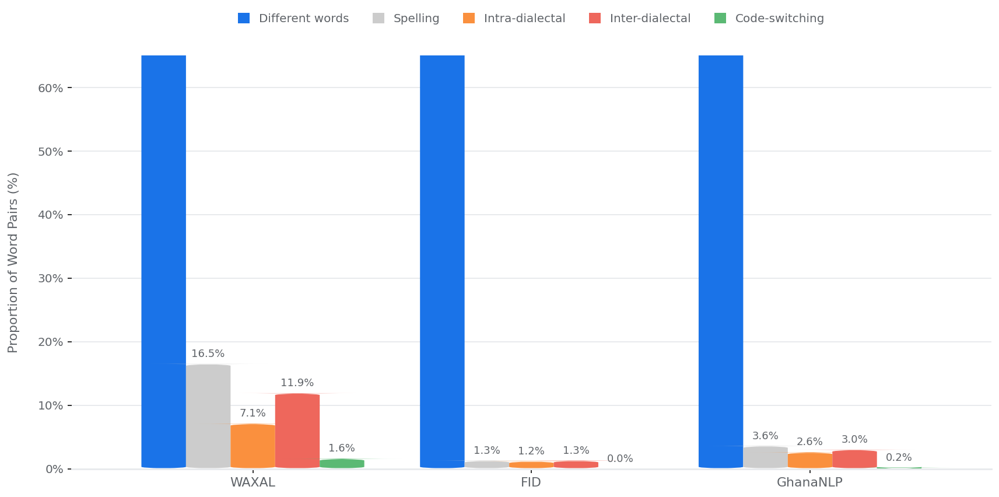

Abstract
Standard Automatic Speech Recognition (ASR) evaluation relies on Word Error Rate (WER), which treats every token-level mismatch as an error regardless of linguistic validity. For dialectally diverse languages like Akan, phonological variations, spelling discrepancies, and code-switching markers are penalized identically to genuine misrecognitions, inflating reported error rates. We introduce a variant-aware WER (va-WER) that normalizes predictions and references through a canonical lexicon compiled exclusively from training and validation data before scoring. Our framework classifies near-miss word pairs into a five-tier linguistic taxonomy using an LLM-as-a-Judge approach validated against native-speaker human annotators, then compiles frequency-based canonical lexicons.
Across three Akan ASR models (Whisper-large-v3, Gemma-3n-2B, MMS-1b-all), we demonstrate that: (1) standard WER is inflated by 15.0%–17.0% (relative) due strictly to legitimate phonological and code-switching variations, rising to 22.4%–25.4% when human spelling inconsistencies are included; (2) the LLM judge achieves 81.4% agreement with native speakers when orthographic categories are collapsed, and sensitivity simulations (N = 50 Monte Carlo trials) confirm that metric reduction remains statistically robust (p < 10−4) even under substantial boundary noise; and (3) lexicons from spontaneous speech corpora transfer to independent Akan datasets, confirming that captured variants represent systematic linguistic phenomena rather than corpus-specific noise. We advocate reporting va-WER alongside standard WER in orthographically fluid languages to distinguish genuine model failures from benign dialectal variations.
A five-tier taxonomy of Akan variation
Akan spans Asante Twi, Akuapem Twi and Fante, and three literary traditions (Basel Mission 1842, Christaller 1875, Akan Orthography Committee 1978) still coexist. Every near-miss pair is assigned one of five categories.
Intra-Dialect Phonological
Spoken pronunciation shifts within a dialect, e.g. intervocalic rhotacism (d → r).
Inter-Dialect Phonological
Systematic differences between dialect groups where both forms are valid.
Code-Switching
English loanwords phonetically adapted into Akan orthography.
Spelling Error
Transcriber violations of orthographic conventions with no phonological basis.
Different Words
Genuine semantic or grammatical errors that change meaning.
Method
From raw transcripts to a variant-aware score in five stages.
Near-miss candidates
Extract unique tokens from train + val only and pair every word within Levenshtein distance d = 1. The test split is never seen.
LLM judge
Gemini 3.5 Flash classifies each pair with a 4-step chain-of-thought prompt, grounded in two real corpus sentences per pair.
Canonical lexicon
The more frequent form becomes canonical. A directed graph resolves diverging mappings, cycles and transitive chains into O(1) lookups.
Normalize & score
Map both reference and hypothesis through the lexicon, then compute ordinary WER: WER(norm(ref), norm(pred)).
Character error rates cluster at 10–30% while WER sits at 40–50%: models produce grapheme sequences that are nearly identical to references but get penalized at the word level. Over 10,000 substitutions occur at exactly one character of difference, and frequency drops off sharply beyond that.


Results
Held-out WAXAL test split, three Akan fine-tuned foundation models, lexicon compiled from WAXAL train + val.
| Standard | Strict va-WER | Fully normalized (+ spelling) | Absolute points recovered, by category | |||||
|---|---|---|---|---|---|---|---|---|
| Model | WER | WER | Δ Rel | WER | Δ Rel | Phonological | Code-switch | Spelling |
| Gemma-3n-2B | 40.00 | 34.02 | 14.95% | 31.02 | 22.45% | 5.87 | 0.11 | 2.54 |
| Whisper-large-v3 | 38.97 | 32.35 | 16.99% | 29.07 | 25.40% | 6.47 | 0.15 | 2.73 |
| MMS-1b-all | 39.54 | 33.14 | 16.19% | 30.01 | 24.10% | 6.26 | 0.14 | 2.60 |
Most raw near-miss pairs are genuinely different words and are discarded. Valid variants concentrate in spontaneous speech: over 30% of WAXAL candidate pairs are legitimate variants (7,434 lexicon entries), while scripted read speech in FID yields only 25.

Lexicons transfer across corpora
Relative WER reduction on WAXAL test predictions when the lexicon is compiled from each source corpus.
The GhanaNLP lexicon, built from community spontaneous speech, still removes 3.1–3.5% of relative WER on WAXAL, while scripted FID removes under 0.8%. Variant coverage scales with how spontaneous and diverse the source register is, which suggests the lexicon captures recurring linguistic phenomena rather than corpus artifacts. (Lexicon size differs substantially across corpora and partly confounds the comparison.)
Why it matters
Voice interfaces are a gateway to civic and financial services across Africa, where oral communication often outpaces written literacy. A Fante-speaking farmer in the Central Region says edwuma (work); an Ashanti clinician expects adwuma. Reporting an unadjusted 40% WER instead of an operational 32% can get a viable model abandoned. va-WER aligns benchmarks with how Akan is actually spoken, and the compiled lexicons can be reused to clean noisy corpora, aid cross-dialect translation, and inform language planning. The recipe (near-miss mining, LLM-guided taxonomy, graph resolution) is a low-cost blueprint for other multidialectal languages such as Yoruba, Igbo, Wolof and Luganda.
Responsible use. The lexicons are intended for acoustic benchmarking and corpus normalization, not for cultural or orthographic standardization. Collapsing variants erases regional distinctions, so va-WER is unsuitable for accent or dialect identification.
BibTeX
@inproceedings{mireku2026beyond,
title = {Beyond Exact Match: Unmasking {WER} Inflation in {Akan} {ASR}
through Variant-Aware Evaluation},
author = {Mireku, Prince and MohamedKhair, MohamedElfatih and
Brempong, Emmanuel Asiedu and Helmy, Amr and Nelson, Perry and
Siyavora, Tavonga and Diack, Abdoulaye and Walcott-Bryant, Aisha},
booktitle = {NeurIPS 2026 Workshop on Africa in AI},
year = {2026}
}